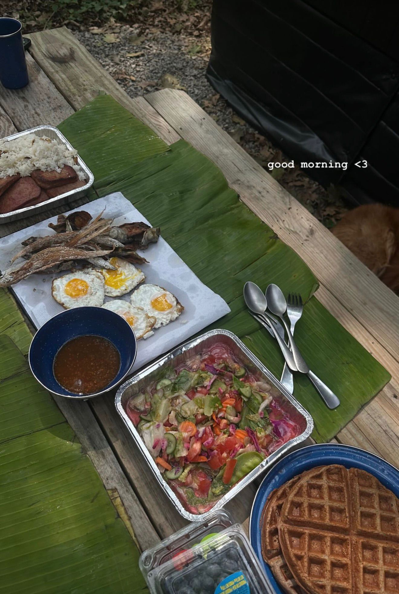
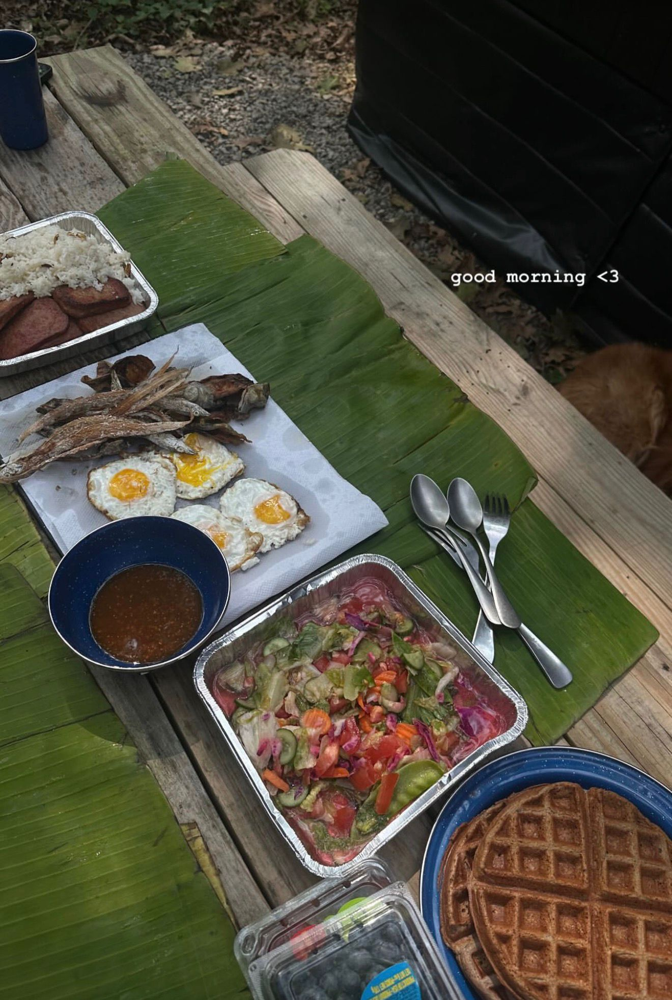

A Cabin Trip Blending Comfort and Nature
Our cabin trip started when a couple we’re friends with invited us to join them. It sounded like a fun and budget-friendly getaway, so we said yes. Each cabin included a bed, a mini kitchen, and a small bathroom. Outside, we had a picnic table and a fire pit, creating a comfortable yet rustic camping experience.
We packed our bags and headed to Wild Rose. Finding the cabin was a bit tricky since it was deep in the woods, but once we located it, we instantly loved it. I lit the fire and grilled some burgers for dinner. We relaxed and enjoyed the peaceful first night with my girlfriend and our dog, Wynter. Wynter especially loved it—he kept exploring and bringing us little treasures from the woods.
On day two, our couple friends joined us. We went hiking first, then the Filipino crew started cooking a traditional seafood dinner. They asked me if I liked fish. I jokingly said a Turkish phrase: "Even if my dad came out of the sea, I’d eat him." But turns out, they weren’t joking—we ate all kinds of seafood that night!
We had mussels, various fish, and other sea creatures I couldn’t even name. What amazed me most was the way we ate—on a banana leaf, the traditional Filipino way. It made the experience feel even more authentic and natural.
On our last day, we decided to go swimming in a nearby dog-friendly lake. At first, we weren’t sure if Wynter would like swimming. But to our surprise, he jumped right in and swam like a pro! It was such a joyful moment and the perfect end to a weekend full of nature, food, and fun.